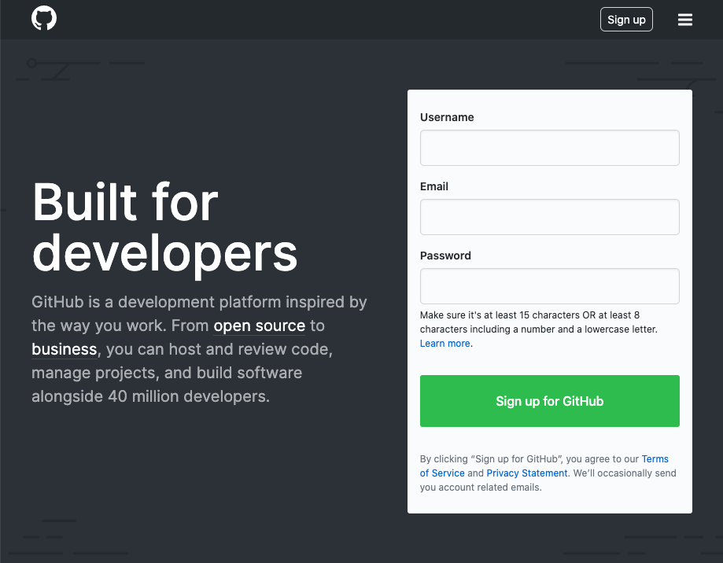
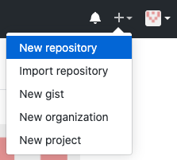
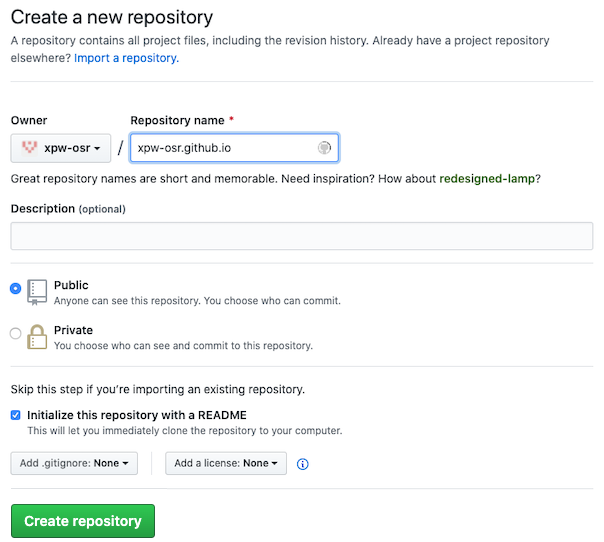
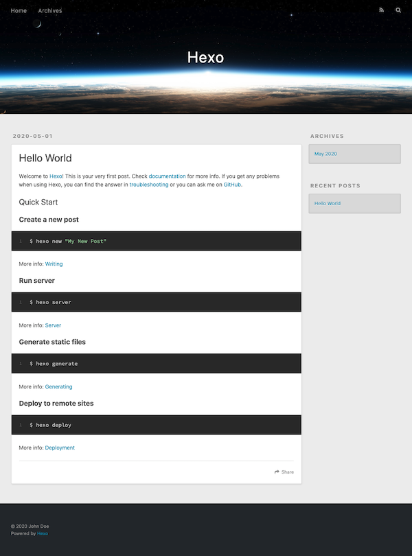
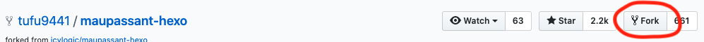
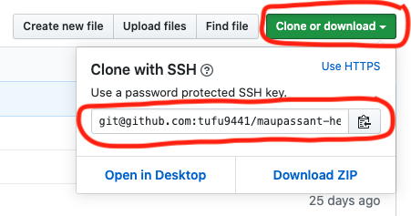
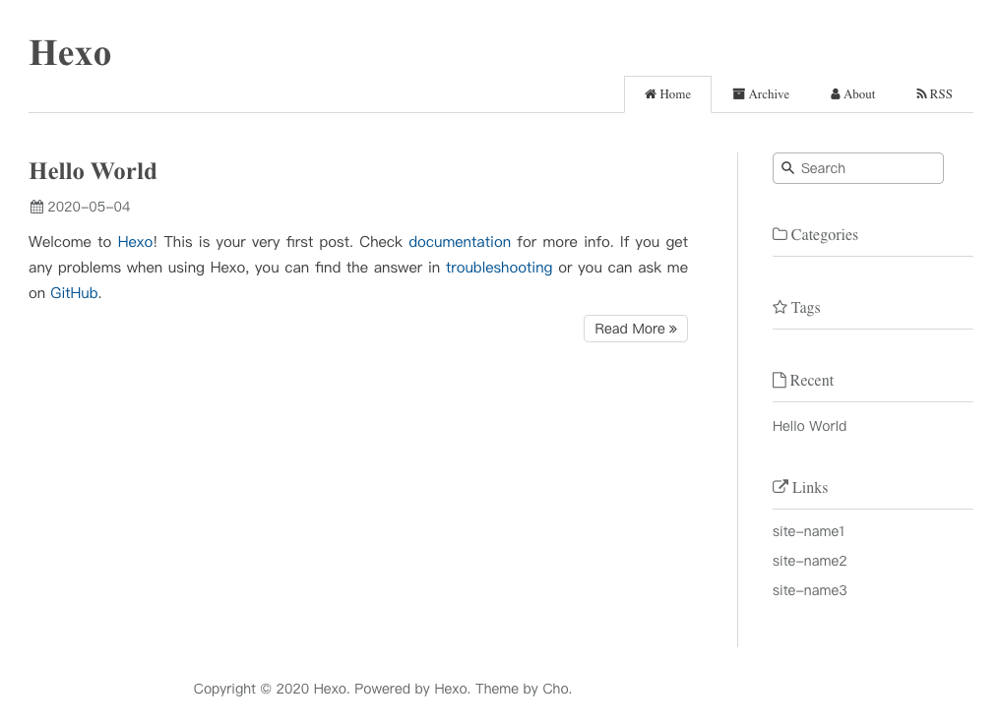
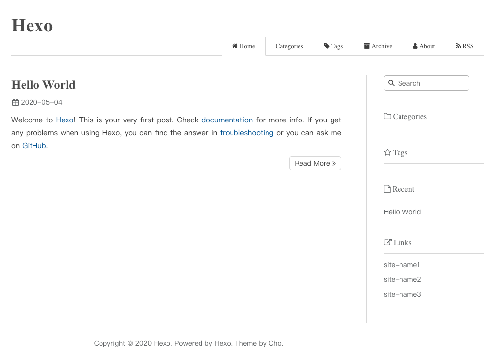

Create Blog on Github with Hexo
We are living in the age of the internet, some of us want to have a blog to record and show our thoughts. Usually, the easist way is regist an account on web site which provides the blog functions. And also, some of us want to have our own blog web site. The regular way is buy your own domian name, server and install blog system. But it has cost, not all people want it.
In this post, I will show you a simple and free way to create blog site for your own with Github and Hexo.
Sign up for Github
Firstly, you should have a Github account before do others steps. If you already have it, you can skip this step and start from Create Github Pages Repository.
To create account of Github, you can open Github site with any web browser which you like. After the page shown, you will see ‘Sign up for Github’ on the page. It looks like following

Now, you just need fill the ‘Username’, ‘Email’ and ‘Password’, and click ‘Sign up for Github’ button, and following the wizard, you will get you account of Github.
Create ‘Github Pages’ Repository
Log in Github with you account. You should have not any repositories in ‘Repositories’ list. Now, we start to create ‘Github Pages’ repositoy.
Click the plus icon which is shown at top right of page, and a menu will be shown.

Choose ‘New Repository’ from the menu, the ‘Create a new repository’ page will be shown.

To create the ‘Github Pages’, the repository’s name MUST be ‘<your-github-username>.github.io’. For example, my user name is ‘xpw-osr’, then the repository’s name MUST be ‘xpw-osr.github.io’.
Enter the name into text box of ‘Repository name’, and mark ‘Initialize this repository with a README’. Then click ‘Create Repository’ button to create it.
Create Blog Project with Hexo
After you created your Github accound and Github Pages repository, we can start to create blog project.
Install Nodejs
Firstly, you need have Node.js on your machine. If not, you need install it now.
A easy way to install and manage Nodejs is using NVM. About how to install NodeJs with NVM, see
Install hexo-cli
To use Hexo, we need install hexo-cli tool. This tool provided command line interfaces of Hexo. It will help us to create blog project, install themes, create post, categories, tags, generate blog files and publish them.
Run following command to install it to global
1 | $ npm install hexo-cli -g |
Create Project
Hexo provides ‘init’ command to create project. This command only can be run with a empty folder. The simple way is run following command to make it create a new folder and fill the project files into it.
1 | $ hexo init <your-project-name> |
For example, if the project named ‘blog’, we can run following command to create it
1 | $ hexo init blog |
If you want to create the folder by yourself, you can run following command. It has the same results as above.
1 | $ mkdir <your-project-name> |
After done, you can launch it and see the default appearance of your blog with following command
1 | $ cd <your-project-name> |

Install Theme
If you don’t like the default appearance, you can find and choose one from Themes, and add it to your project.
For example, I use ‘Maupassant’ as the base theme of my blog. Open the Maupassant project page by click the link of it on themes page.
Forking theme project to your github (Optional)
If you want to do some customization based on the theme project, you need fork it to your github since you will need change some code of the theme and then push to github. And also, it makes you can pull the new version of theme from original repository when there is any new features which you want.
If you don’t want, skip this step.
To fork the project to your github, click the fork button at the top right of ‘Maupassant’ project page.

After the process which shown on page, it has been forked for you. And you can find it has been shown in your ‘Repositories’ list on home page of your account.
Installing
To install theme, you can run following command at root path of your blog project.
1 | $ cd ./blog |
For the <theme-project-clone-url>, you can get by click ‘Clone or download’ button and copy it.

If you forked the original project, you should get it from you github repository; ohterwise, from original github repository.
For the <theme-name>, it should be ‘maupassant’ for me.
Now, we already cloned the theme project into our blog project. Read the README of theme project, there also has some dependices need to be installed. (maybe some theme projects no additional dependencies need to be installed, please read README file of theme project which you chose).
Then we must run following commands to install the dependancies for Maupassant theme.
1 | $ npm install hexo-renderer-pug --save |
Notes: if you meet following errors when installing hexo-renderer-sass
1 | In file included from ../src/binding.cpp:3: |
you can add ‘LIBSASS_EXT=”no”‘ to ahead of the command and retry. It worked for me.
1 | $ LIBSASS_EXT="no" npm install hexo-renderer-sass --save |
Enable theme which you chose
Open ‘_config.yml’ file from the root of your blog project folder, and scroll down to end.
Then change the value of ‘theme’ to yours.
1 | theme: <name-of-your-theme> |
For my blog, it should be
1 | theme: maupassant |
Now, we can launch it to see the result.
1 | $ hexo server |

Remove unsed themes
After you confirmed which theme will be used for your blog, you can remove other themes from ‘themes’ folder.
For example, currently, there are 2 theme projects in my ‘themes’ folder - ‘landscape’ and ‘maupassant’. I will use ‘maupassant’, so, I will remove ‘landscape’ project.
1 | $ rm -rf themes/landscape |
Customizing
With the default pages of theme which shown above, we need do some customizations for it. Let’s start now.
Basic Information
The first thing is set the title and subtitle for blog.
Open the ‘_config.yml’ file from root folder of blog project folder, and change following lines
1 | title: Hexo |
For my blog, it should be
1 | title: Simple Journey |
Then, if you want to use pictures in posts which like this post, you should set ‘post_asset_folder’ to true
1 | post_asset_folder: true |
Add Categories and Tags pages (Optional)
Usually, we want to categorize our posts, and also want to readers can find it with keywords. Hexo provides Categories and Tags pages for us.
To use it, we need create categories page and tags page, and add them to menu.
Create Categories page
1 | $ hexo new page categories |
This command will create a ‘categories’ folder in ‘source’ folder. And you can find there is an ‘index.md’ file in it.
1 | --- |
We need modify the ‘index.md’ to indicate the type and layout for it.
Open ‘source/categories/index.md’ and add type and layout for it.
1 | --- |
Create Tags page
Same as Categories page, we also need create ‘tags’ folder
1 | $ hexo new page tags |
and modify ‘index.md’ file to indicate the type and layout
1 | --- |
Add them to menu
To change the configurations of menu, you need open and edit ‘_config.yml’ file in theme project. For my blog, it should be ‘themes/maupassant/_config.yml’.
Open it and scroll down to ‘menu’ section, you will see
1 | menu: |
With above definiations, one menu is related to a page. and the order of pages is same as the order of menu items. For Categories and Tags pages, we hope they is shown before ‘Archives’, so it should be
1 | menu: |
Modify template of post (Optional)
If you added ‘Categories’ and ‘Tags’ pages, you will want to mark each post with them. To make it, we need modify the template of post.
Open ‘scaffolds/post.md’ and replace the content with following
1 | --- |
Note: The Maupassant theme does not provided the icon of categories, so I does not set the value of ‘icon’ for categories page. You can check it with your choice.
Launch blog now, we can find the ‘Categories’ and ‘Tags’ menu there. Click them, just empty page now. They will be filled after we added posts and mark the posts with category and tags.

Ok, the blog already match our basic requirements, we can used it now. For more functions, we can config or add them when we need it really.
Push Blog project to github
To store the blog project, we need create a new repository on Github without mark ‘Initialize this repository with a README’. And if you don’t want other people to access this repository, you can set it to ‘Private’.
Then back to local blog project. We need initialize this project for git.
1 | $ cd ./blog |
And add README file with content what you want.
1 | $ echo '# blog' > README.md |
Now let’s check the what files should be committed to Github.
1 | $ git status |
Following information should be shown
1 | On branch master |
Before we add other files to staged, we need add theme project as a submodule of project because you should not commit the code of theme project into your blog project. But you also want to clone it into ‘themes’ folder automatically when you clone your blog project on other machine. To make it realizable, we just need add it as a submodule of project.
1 | $ git submodule add <theme-project-clone-url> themes/<theme-project-folder-name> |
After this, the theme project will be cloned as a submodule.
In git status information, you can find following line
1 | modified: themes/maupassant (modified content) |
It means there are some changes in our theme project, we should commit them firstly before add ‘themes/maupassant’ to staged. Otherwise, it cannot be added.
After it, add all files which listed by ‘git status’ command to staged with command
1 | $ git add <item> |
Then commit them with
1 | $ git commit -m 'create blog project' |
At last, run following command to push project to Github. (this command will be used only this times)
1 | $ git remote add origin git@github.com:<your-github-username>/blog.git |
OK, you can write your post now. :-)
Write Post and Publish
Write Post
To start writting a post, we just need run following command
1 | $ hexo new <title> |
For example
1 | $ hexo new 'Test Blog Post' |
After the post created, it will show the path of post file.
1 | INFO Created: <path-to-blog-project>/source/_posts/Test-Blog-Post.md |
Open the file, you will find following content
1 | --- |
Now, you can fill the values of ‘categories’ and ‘tags’, and start to write post.
Tips
1. Add pictures for special post
If you use above command to create a post, the assets folder already created by Hexo. Otherwise, you should create it manually.
Create assets folder for a post
Open ‘source’ folder, create a subfolder with same name of post file without ext.
For example, if post fiilename is ‘Test-Blog-Post.md’, the folder name should be ‘Test-Blog-Post’.
Use images in a post
Put all images which will be used in the post, and add following code to show them in post.
1 |  |
Note: it is just filename with ext, no path here.
For example, there is image file ‘logo.png’, the code will be
1 |  |
2. Refer to other post in ‘source’ folder
Just add link by
1 | {% post_link <post-filename-without-ext> %} |
Then, the post_link_plugin will convert it automactically.
Publish
Hexo provids ‘deploy’ command to make publishing more easier. To publish our blogs to ‘Github Pages’ with git, we need install ‘hexo-deployer-git’
1 | $ npm install hexo-deployer-git |
And then, add following configurations to ‘_config.yml’ file which under the root of blog project.
1 | deploy: |
At last, run following command to publish blogs
1 | $ hexo clean && hexo deploy |
Conclusion
I hope this post can give you help. If you have any questions or suggestions, please feel free to add your comments to Issue
References
Hexo - A fast, simple & powerful blog framework
Maupassant theme